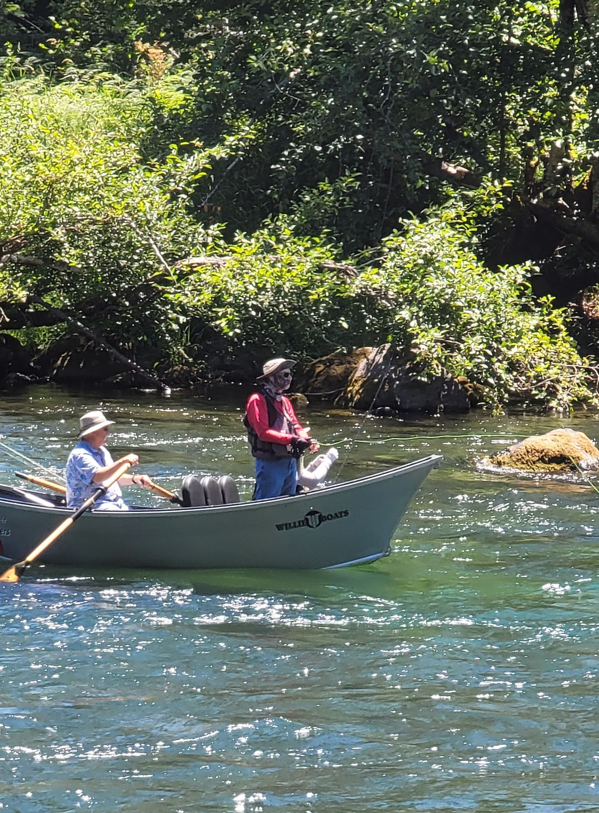

The McKenzie River is home to native rainbows — the famous McKenzie redsides — and cutthroat trout, along with brown trout that have established themselves in certain stretches and acquired reputations among local anglers as something approaching legendary. The river runs clear and cold year-round; the water hovers between 48 and 52 degrees even in the heat of summer, which means the trout are active and selective.
This is not a forgiving river. It rewards technique and patience. We live on one of its premium middle stretches and host anglers all season — here's the briefing we give them.
The Stretches: Three Rivers in One
Upper McKenzie
Above Clear Lake and down through the upper canyon, the river is faster, rockier, more technical. Driftboat anglers love it, wading is challenging, and the trout are smaller but numerous. It's the place to go if you want to catch fish consistently and don't mind smaller hookups.
Middle McKenzie — Where the Conversation Happens
From McKenzie Bridge down to Vida, the gradient eases, the canyon opens, the water clarifies to that distinctive blue-green, and the fish are larger. This is where serious anglers spend their time. The Goodbye Creek area, the Leaburg section, and the water directly in front of Vida View Resort are all premium stretches. In spring, high water makes wading difficult but drift boats thrive; by mid-June the water drops and clarity improves to remarkable depths.
Lower McKenzie
Below Vida toward Springfield the river runs warmer and slower, and larger brown trout dominate. The fishing is excellent for those willing to take on more technical presentations and longer approaches. It's less crowded — and worth it if you're willing to work.

The Seasons
| Season | Conditions | The Verdict |
|---|---|---|
| Spring (Mar–May) | High water, prolific hatches, blue-winged olives from late March | Arguably the most productive season — aggressive fish, empty canyon |
| Summer (Jun–Aug) | Clear, low, selective fish; jade-colored late-afternoon light | Technical dry-fly season: small flies, light tippet, patience |
| Fall (Sep–Nov) | Cooling water, continuing hatches, golden canyon | October is our favorite month on the river, full stop |
| Winter (Dec–Feb) | Trout slow down | Steelhead season — a different beast that commands respect |
The Technique: Four Things the River Demands
- Light conditions matter. The canyon walls create shade patterns that shift throughout the day. Where fish will rise to a dry at 5 PM, they won't touch it at 3 PM. Understanding the light is half the battle.
- The current has lanes. Trout position themselves where the current brings food without exhausting them. Learn to read seams, current breaks, and depth changes — fish are lazy, and they hold where calories exceed effort.
- Tippet visibility is everything. On clear water in bright conditions, fish tippet as fine as you can confidently cast — 5x, 6x, even 7x in late summer. Thick tippet will cost you fish.
- Pattern matters, but presentation matters more. A well-presented size-12 fly will out-fish a perfectly tied size-18 with a sloppy drift, every time.
"Whether you catch a dozen fish or none, you will have been present in a place worth being present in."
Hire a Guide (Seriously)
If you're not comfortable wading technical water — or you simply want to compress years of local knowledge into a single day — hire a guide. The guides operating out of McKenzie Bridge and Vida know the river's moods, the fish's seasonal movements, and what works when conditions turn variable. A single guided day is worth more than a week of trial and error. Ask about Goodbye Creek, the Leaburg section, and the water immediately downstream of our property.
One practical note: an Oregon fishing license is required, and regulations differ by stretch and season — check the current Oregon Department of Fish & Wildlife rules before you rig up.
Stay on the Water You Came to Fish
The middle McKenzie's premium water runs directly in front of Vida View Resort — 750 feet of private frontage with your own bank access and a private boat launch at The River Front House. Fish the evening rise, then walk up the lawn to the hot tub. Every three-night stay also includes complimentary guided rafting, and the non-anglers in your group get the heated pool, sauna, paddleboards, and hot springs day trips while you're on the water.
Comparing your options first? Our guide to McKenzie River lodging covers every type of stay on the corridor, honestly.
Frequently Asked Questions
What fish are in the McKenzie River?
Native rainbow trout (McKenzie redsides) and cutthroat, plus brown trout in the slower stretches below Vida. Winter is steelhead season.
When is the best time to fish?
Spring for productivity, summer for technical dry-fly work, and October for the best all-around month on the river.
Do I need a license?
Yes — an Oregon fishing license, and regulations vary by stretch and season. Check current ODFW rules.
Should I hire a guide?
If you want to learn the river fast, yes. A single guided day beats a week of trial and error.